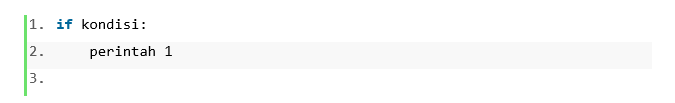
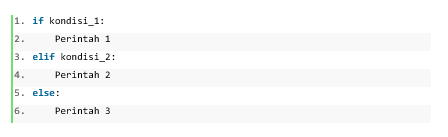

Beranda >
Materi > Percabangan dan Perulangan Itu
Apa?
Percabangan dan Perulangan Itu Apa?
Mungkin dipikiranmu pernah tertlintas pertanyaan.
Apa itu percabangan?
Bagi yang merasakan kuliah atau belajar tentang algoritma dan flowchart,
pasti pernah menjumpai istilah ini.
Istilah ini digambarkan sebagai alur program yang bercabang. Pada flow
chart, logika “jika…maka” digambarkan dalam bentuk cabang.
Misalnya mencetak kata “Lulus” atau “Tidak Lulus” berdasarkan nilai
ujian. Dalam bahasa pemrograman python, perintah untuk mengatur eksekusi
kode dapat menggunakan beberapa cara seperti berikut :
1. IF
integer(int) merupakan nilai dari bilangan bulat, dan float merupakan
nilai bilangan desimal.
2. String
Perintah IF digunakan jika jalannya suatu kode didasarkan pada satu
kondisi.

Pada contoh format kode diatas, python akan mencari nilai dari kondisi.
Jika kondisi bernilai True maka perintah 1 akan dijalankan. Begitupun
sebaliknya, jika bernilai False maka perintah 1 tidak akan dijalankan.
Perhatikan bahwa ada jarak indentasi pada penulisan perintah 1.
Indentasi pada python merupakan tanda bahwa perintah 1 merupakan bagian
dari IF.
2. IF..ELSE
Format perintah If..Else kita gunakan jika kita perlu mengeksekusi kode
jika kondisi bernilai salah.
Pada contoh format diatas Perintah 1 akan dijalankan jika kondisi
bernilai True sedangkan Perintah 2 akan dijalankan jika kondisi bernilai
False.
3. IF..ELIF..ELSE
Sekarang bagaimana untuk program yang memerlukan seleksi lebih dari 2
kondisi. Maka kita menggunakan perintah yang ketiga yaitu
if..elif..else. Format kodenya adalah sebagai berikut.

Pada contoh kode diatas Perintah 1 dan Perintah 2 hanya dijalankan jika
memenuhi masing-masing kondisi. Sedangkan perintah 3 akan dijalankan
jika tidak memenuhi kondisi_1 dan kondisi_2. Gambar 7.3 berikut
merupakan flowchart dari perintah if..elif..else.
Apa itu perulangan ?
Metode perulangan merupakan proses mengatur alur program agar dapat
menjalankan suatu kode lebih dari satu kali.
Beberapa contoh perulangan :
1. Perulangan while
2. Perulangan dengan For
3. Perulangan dengan else
Artikel ini berdasarkan modul Percabangan dan Perulangan. Pelajari
selengkapnya di bawah ini.